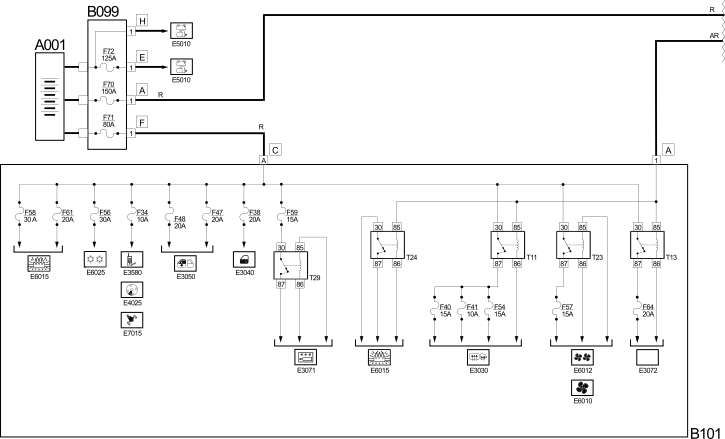
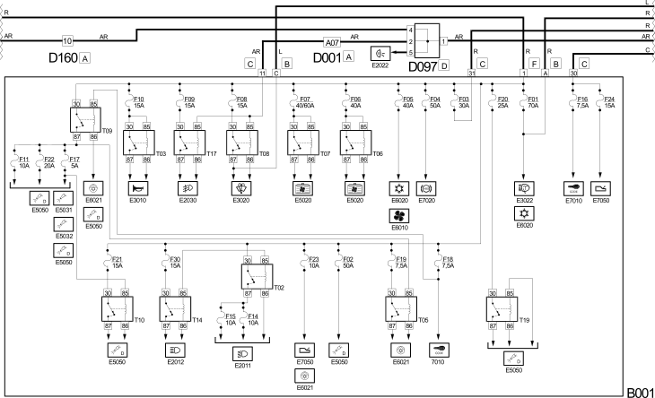
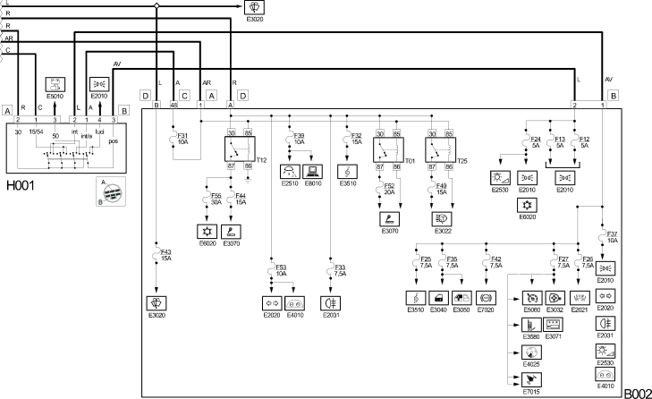

E1010 POWER SUPPLY WIRING DIAGRAM
- Path
- Electrical equipment > 1 ELECTRICAL FUNCTIONS > E10 POWER SUPPLY AND EARTHS > E1010 POWER SUPPLY > E1010 POWER SUPPLY WIRING DIAGRAM
- Kind
- topic
- Applies to
- all engines; all production periods
- Interactive page
- https://sloeber94.github.io/elrnDB-fDct/en/#/244001578
Applies to: all engines; all production periods
Wiring Diagram



Components
Component code | Description | Reference to the assembly |
|---|